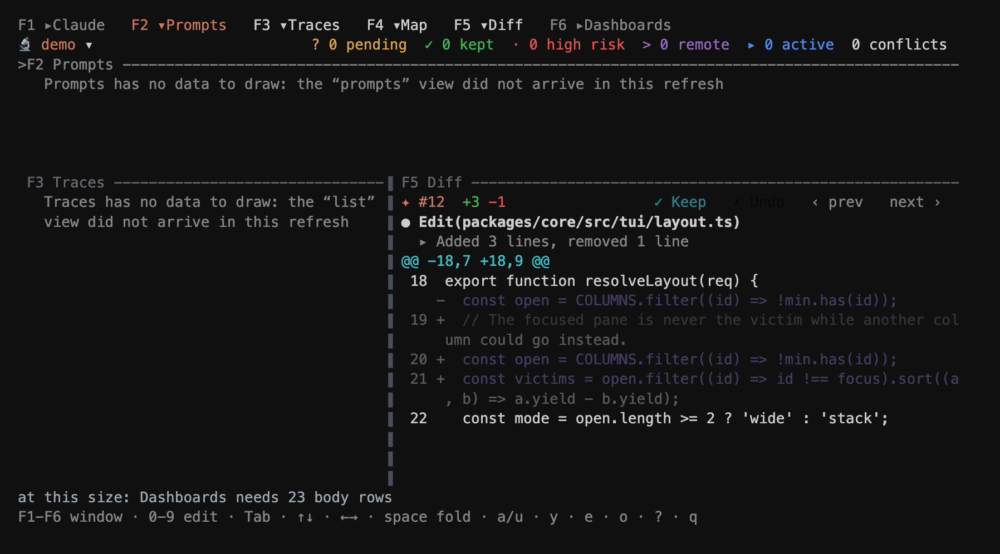

The Terminal User Interface
claude-observatory, with no arguments, opens a full-screen review over the session Claude is working in — the app is the front door. (claude-observatory tui is the same thing said explicitly.) Five windows: Prompts, what you asked and what each ask changed; Traces, every captured edit; a centre window with two faces — the session's change map or the selected edit's diff; and Dashboards for the fleet, tasks, processes and sessions. Arrows move, F1–F5 jump, a keeps and u reverts, x marks several to act on together, and esc steps back out to the map.
It is not a viewer. Everything the extensions can do to a session, the dashboard can: accept and revert single edits, whole files, whole folders, whole prompts, and whole tasks — against the same store, under the same locks.

claude-observatory over the bundled demo session.The extension
Review inline, where the code is. Changed lines carry a gutter mark; the floating review bar rides the edit under your cursor with Keep, Undo, and the four navigation axes on it. The Overview panel is the same change map the dashboard draws, with Fleet, Workflows, Tasks, Processes and Sessions beside it. Nothing here re-derives a number — the panel renders what the CLI returned.

The plugin
The same surfaces as native tool windows in IntelliJ IDEA, PyCharm, WebStorm, GoLand and the rest — the Observatory Dashboards window, the change map, and a floating review toolbar over the editor. It reads the identical changemap, multitask, processes and sessions payloads, so a number shown here is the number shown in VS Code and in the terminal.

The backend
Every app above is a renderer over claude-observatory, and the CLI is usable on its own: status, list, diff, keep, undo, changemap, sessions. Each verb takes --json and that output is the whole view API — which is why a fix lands in all three apps at once, and why a session on another machine can be listed over SSH without anything being installed there.